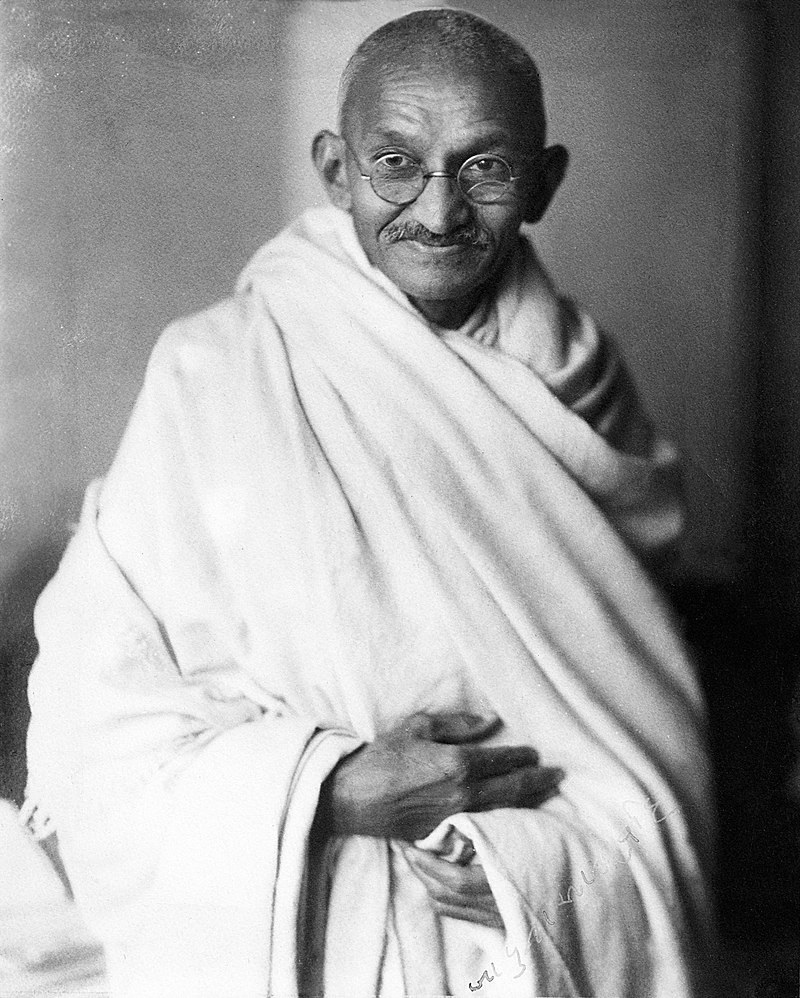

Mahatma Gandhi
What is HTML?
Born and raised in a Hindu family in coastal Gujarat, Gandhi trained in the law at the Inner Temple, London, and was called to the bar at age 22 in June 1891. After two uncertain years in India, where he was unable to start a successful law practice, he moved to South Africa in 1893 to represent an Indian merchant in a lawsuit. He went on to live in South Africa for 21 years. It was here that Gandhi raised a family and first employed nonviolent resistance in a campaign for civil rights. In 1915, aged 45, he returned to India and soon set about organising peasants, farmers, and urban labourers to protest against excessive land-tax and discrimination.
click here to read more